使用Verilog语言结构化描述方式设计一个32位ALU，具有32位无符号数加法、逻辑运算、移位、截断等功能。
项目已开源，点击此处查看
项目简述
项目环境与描述方式
设计语言： Verilog硬件描述语言
开发环境： Vivado 2019.2
测试环境： LS-CPU-EXB-002实验箱，搭载Xilinx Artix-7 xc7a200tfbg676-2
描述方式： 结构化描述方式
设计目标
使用Verilog语言结构化描述一个32位ALU，具有以下功能：
- 32位无符号数加法
- 32位无符号数移位、32位无符号数截断
- 32位数逻辑与、32位数逻辑或、32位数逻辑非、32位数逻辑异或
实现情况
将上述功能集成至一个顶层模块中，其中顶层模块包括：
| 输入变量 | |
|---|---|
| [31:0] a | 32位操作数1 |
| [31:0] b | 32位操作数2 |
| CI | 1位进位输入，用于加法初始进位 |
| [2:0] F | 3位输入，用于功能选择 |
| [1:0] dir | 2位输入，用于移位或截断方向的选择 |
| [4:0] bite | 5位输入，用于移位位数或截断位数的选择 |
| 输出变量 | |
| [31:0] S | 32位输出，用于输出结果 |
| CO | 1位输出，用于加法结果第33位进位输出 |
实现细节
主要模块
加法模块
加法模块采用了组间、组内并行的超前进位方式设计
首先构造出一个1-bit全加器，在构建一个4-bit CLA组件，通过整合四个1-bit全加器和一个4-bit CLA组件，得到一个4-bit超前进位加法器。在使用四个4-bit超前进位加法器，整合而成一个16-bit超前进位加法器，最后使用两个16-bit超前进位加法器即可完成32-bit超前进位加法器。
其中，超前进位模块在运算时为每一位计算提供CI的进位信息，相比较行波进位的方式，该方式能有效控制由于门电路堆叠造成的延迟时间。
具体原理：
设二进制加法器第 i 位为Ai，Bi，输出为Si，进位输入为Ci，进位输出为C(i+1)，则有：
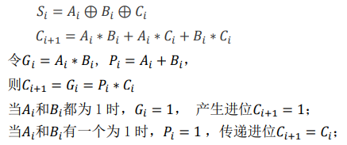
四位超前进位模块公式：
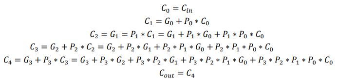
四位超前进位模块：
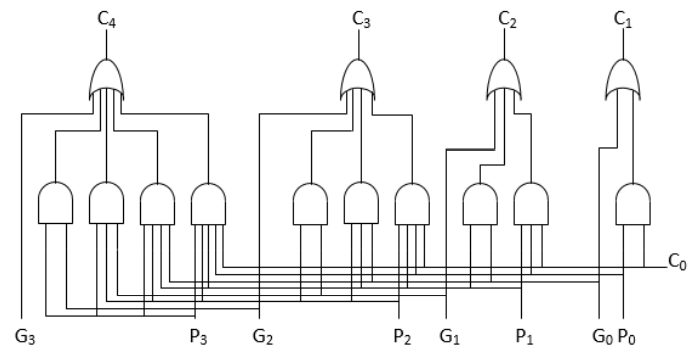
四位超前进位加法器
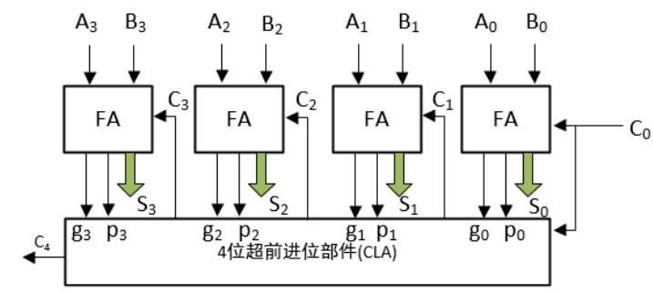
封装后的四位超前进位加法器：
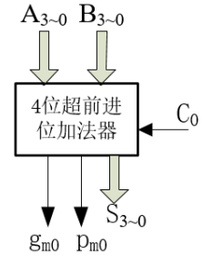
因为
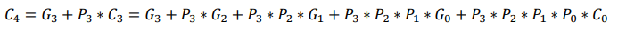
通过类比法可得：
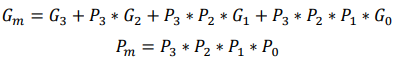
十六位超前进位加法器：
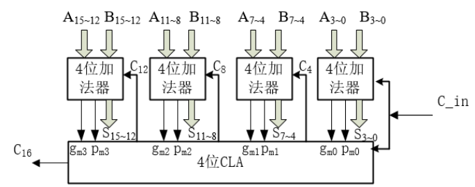
三十二位超前进位加法器：
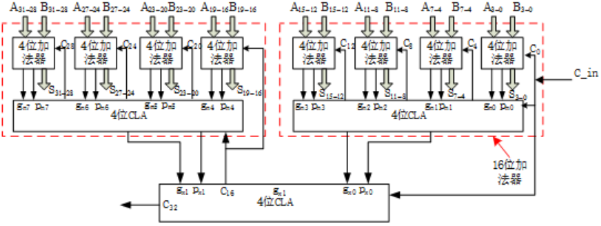
移位模块
采用门电路设计，由 1bit 移位模块、2bit 移位模块、4 bit 移位模块、8 bit 移位模块、16 bit 移位模块共五个模块构成 32 位移位模块。
移位功能分为四种不同的类型，分别为逻辑左移、逻辑右移、循环左 移和循环右移。
根据输入的两位操作数 dir 来调用不同的功能，之后再根据输入的 5 位操作数 bite 来判断移位的位数，移位位数范围从 0 到 31。
- 逻辑左移： dir 取 00。将目标数向左移动，最低位补 0。
- 逻辑右移： dir 取 10。将目标数向右移动，最高位补 0。
- 循环左移： dir 取 01。将目标数循环左移，右侧用原符号位补齐。
- 循环右移： dir 取 11。将目标数循环右移，左侧用原符号位补齐。
具体原理：
shifter_1bit：
译码器：
将输入的 2 位操作数 dir 通过译码器，输出接 wire [3:0] f，作为 功能使能信号,输出的 4 种组合中，每一种组合中只有一位输出为 1，其余三 位输出为 0。
循环左移：
将 32 位输入信号与功能信号 f[0],移位使能信号 enable 相与，结 果错位输出，错位距离为 1bit，例：输入第 30 位接输出第 31 位。
循环右移：
基本同循环左移，功能信号为 f[2],需更改错位的方向，例：输入 第 31 位接输出第 30 位。
逻辑左移：
功能信号为 f[1],移位后溢出的位直接丢弃，空余的位接 0 信号输 出，输入输出的每一位对应方法同循环左移。
逻辑右移：
功能信号为 f[3],基本同逻辑左移，只需更改接相应输入输出每一 位对应的方法。
shifter_2bit、shifter_4bit、shifter_8bit、shifter_16bit： 基本同上， 只需将输入输出的错位距离更改为 2、4、8、16 位即可。
截断模块
本项目实现的截断功能是从目标数中截取出指定位数数据，其余位数上数据置 0。
功能分为了两种不同的类型，分别为从左（高位）截取和从右（低位）截 取。
根据输入的两位操作数 dir 来调用不同的功能，之后再根据输入的 5 位操作数 bite 来判断截取的位数，截取位数范围从 1 到 32，截位始端都从目标数左端或右 端开始。
- 从右截取： dir取00。
- 从左截取： dir取10。
具体原理：
译码器：
将输入的 5 位操作数 bite 通过译码器，输出的 32 种组合中，每一种组合中 只有一位输出为 1，其余输出为 0。输出的 32 种组合与输入的 5 位变量的最小项 一一对应。
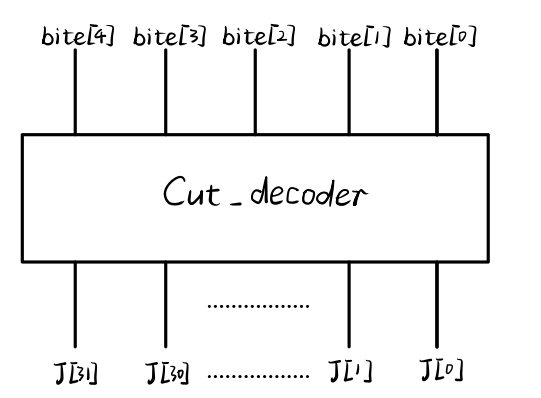
从右截取：
in 端口输入 0，若 J[n]为 1，则 J[n-1]…J[0]对应的或门输出结果都为 1，将 输出结果与输入的目标数 1 按位相与，输出 s。J[31]…J[n+1]所对应的输出都 被置为 0，而 J[n]…J[0]对应的输出保持原样。
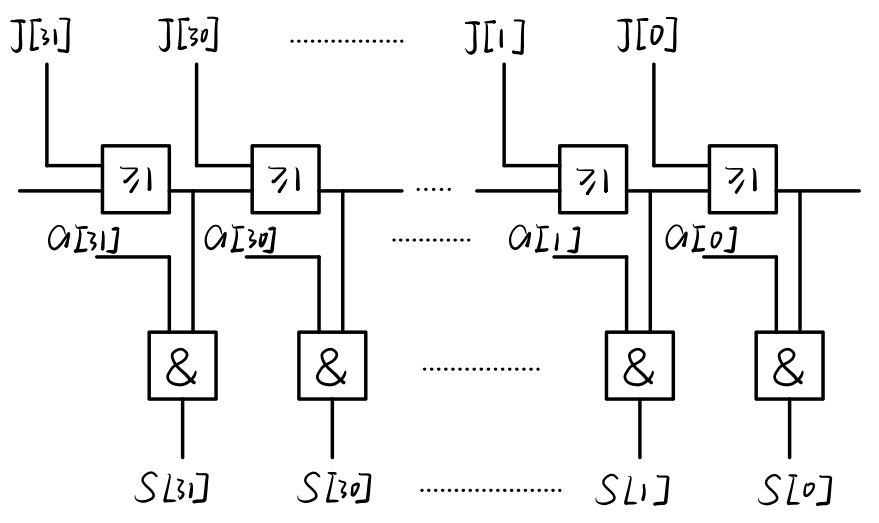
从左截取：
in 端口输入 0，若 J[n]为 1，则 J[n-1]…J[0]对应的或门输出结果都为 1，将 输出结果与输入的目标数 1 按互补位相与，输出 s。J[n-1]…J[0]所对应的输出 都被置为 0，而 J[31]…J[n]对应的输出保持原样。
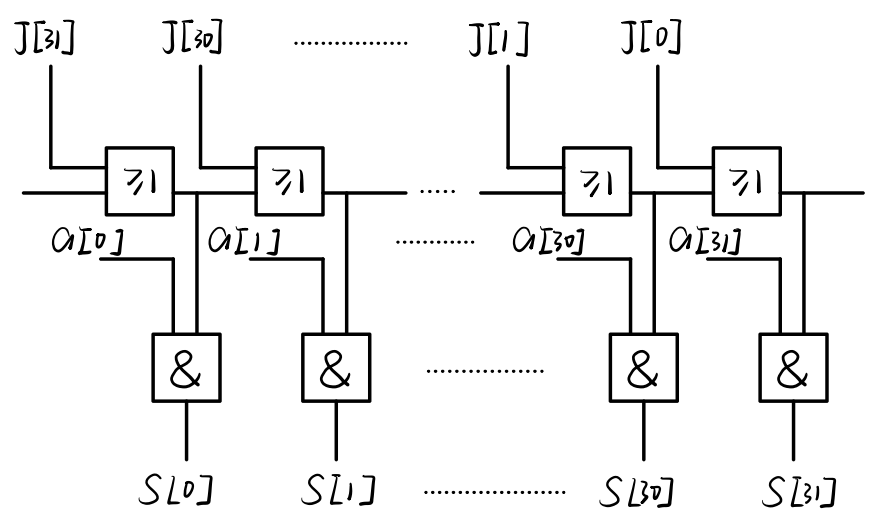
逻辑与
实现两个给定 32 位目标数之间的与运算，输出 32 位与运算后的结果。 输入两个目标数 a、b,输出结果 s。
具体原理：
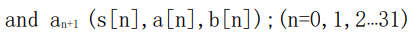
逻辑或
实现两个给定 32 位目标数之间的或运算，输出 32 位或运算后的结果。 输入两个目标数 a、b,输出结果 s。
具体原理：
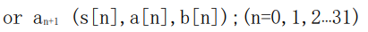
逻辑非
实现一个给定 32 位的非运算，输出 32 位非运算后的结果。 输入一个目标数 a，输出结果 s。
具体原理：
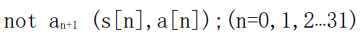
逻辑异或
实现两个给定 32 位目标数之间的异或运算，输出 32 位异或运算后的结果。 输入两个目标数 a、b,输出结果 s
具体原理：
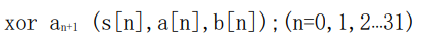
译码器
输出的 8 种组合与输入的 3 位变量的最小项一一对应。
| 输入 | 输出 | |||||||||
|---|---|---|---|---|---|---|---|---|---|---|
| F2 | F1 | F0 | Y0 | Y1 | Y2 | Y3 | Y4 | Y5 | Y6 | Y7 |
| 0 | 0 | 0 | 1 | 0 | 0 | 0 | 0 | 0 | 0 | 0 |
| 0 | 0 | 1 | 0 | 1 | 0 | 0 | 0 | 0 | 0 | 0 |
| 0 | 1 | 0 | 0 | 0 | 1 | 0 | 0 | 0 | 0 | 0 |
| 0 | 1 | 1 | 0 | 0 | 0 | 1 | 0 | 0 | 0 | 0 |
| 1 | 0 | 0 | 0 | 0 | 0 | 0 | 1 | 0 | 0 | 0 |
| 1 | 0 | 1 | 0 | 0 | 0 | 0 | 0 | 1 | 0 | 0 |
| 1 | 1 | 0 | 0 | 0 | 0 | 0 | 0 | 0 | 1 | 0 |
| 1 | 1 | 1 | 0 | 0 | 0 | 0 | 0 | 0 | 0 | 1 |
顶层ALU模块
首先设计实现不同功能的子模块，之后将这些子模块例化，集成到至同一个顶 层模块 ALU 中，然后设计译码器模块，通过译码器输入的不同来实现不同的子模 块的调用，从而实现不同的功能。
| 输入变量 | |
|---|---|
| [31:0] a | 32位操作数1 |
| [31:0] b | 32位操作数2 |
| CI | 1位进位输入，用于加法初始进位 |
| [2:0] F | 3位输入，用于功能选择 |
| [1:0] dir | 2位输入，用于移位或截断方向的选择 |
| [4:0] bite | 5位输入，用于移位位数或截断位数的选择 |
| 输出变量 | |
| [31:0] S | 32位输出，用于输出结果 |
| CO | 1位输出，用于加法结果第33位进位输出 |
| 功能选择 | |
| F:000 | 无功能，此项输出 ffffff |
| F:001 | 加法功能 |
| F:010 | 移位功能 |
| F:011 | 截断功能 |
| F:100 | 逻辑与 |
| F:101 | 逻辑或 |
| F:110 | 逻辑非 |
| F:111 | 逻辑异或 |
明细表
细节明细表
| 模块名 | 模块输入 | 模块输出 | 描述 |
|---|---|---|---|
| ALU_Display | * | * | 顶层模块，调用多个子模块 |
| ALU_32bit | a:(32bit)目标数1、 b:(32bit)位目标数2、 CI:加法初始进位、 F:(3bit)功能选择、 dir:(2bit)移位或截断使用、 bite:(5bit)位数选择 |
S:(32bit)结果输出、 CO:加法结果进位 |
顶层模块，调用多个子模块 |
| Decoder_3To8 | a:(3bit)顶层模块 、F输入 | y:(8bit)与子模块输出相与 | 译码器 |
| CLA_Add_32bit | A:(32bit)目标数 1 输入、 B:(32bit)目标数 2 输入、 CI:初始进位输入 |
S:(32bit)加法结果输出、 CO:加法结果进 位输出 |
超前进位加法器 |
| Shifter_32bit | a:(32bit)目标数1输入、 dir:(2bit)方向或功能判断、 bite:(5bit)移位位数 |
result:(32bit)移位结果输出 | 移位模块 |
| Decoder_2To4 | a:(2bit)移位器子模块dir输入 | y:(4bit)与子模 块目标数 1 相与 | 译码器 |
| Truncate_32bit | a:(32bit)目标数1输入、 dir:方向判断、 bite:(5bit)位数确定 |
s:(32bit)截断结果输出 | 截断模块 |
| Cut_decoder | bite:(5bit)位数输入 | judge:(32bit) 译码结果输出 | 截断模块子模块 |
| CutL | dir:作为0使用、 a:目标数1输入、 judge:(32bit)译码结果输入 |
s:(32bit)从左端点开始截断结 果输出 | 左截断 |
| CutR | dir:取反，作为 0 使、 a:目标数1输入、 judge:(32bit)译码结果输入 |
s:(32bit)从右端点开始截断结果输出 | 截断器子模块：从右截断 |
| And_32bit | a:(32bit)目标数 1 输入、 b:(32bit)目标数 2 输入 |
s:(32bit)逻辑与结果输出 | 逻辑与 |
| Or_32bit | a:(32bit)目标数 1 输入、 b:(32bit)目标数 2 输入 |
s:(32bit)逻辑或结果输出 | 逻辑或 |
| Not_32bit | a:(32bit)目标数 1 输入 | s:(32bit)逻辑非结果输出 | 逻辑非 |
| Xor_32bit | a:(32bit)目标数 1 输入、 b:(32bit)目标数 2 输入 |
s:(32bit)逻辑异或结果输出 | 逻辑异或 |